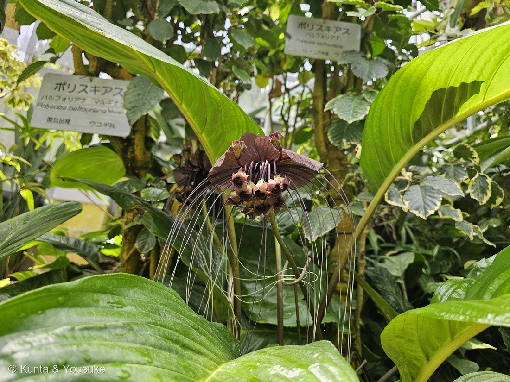
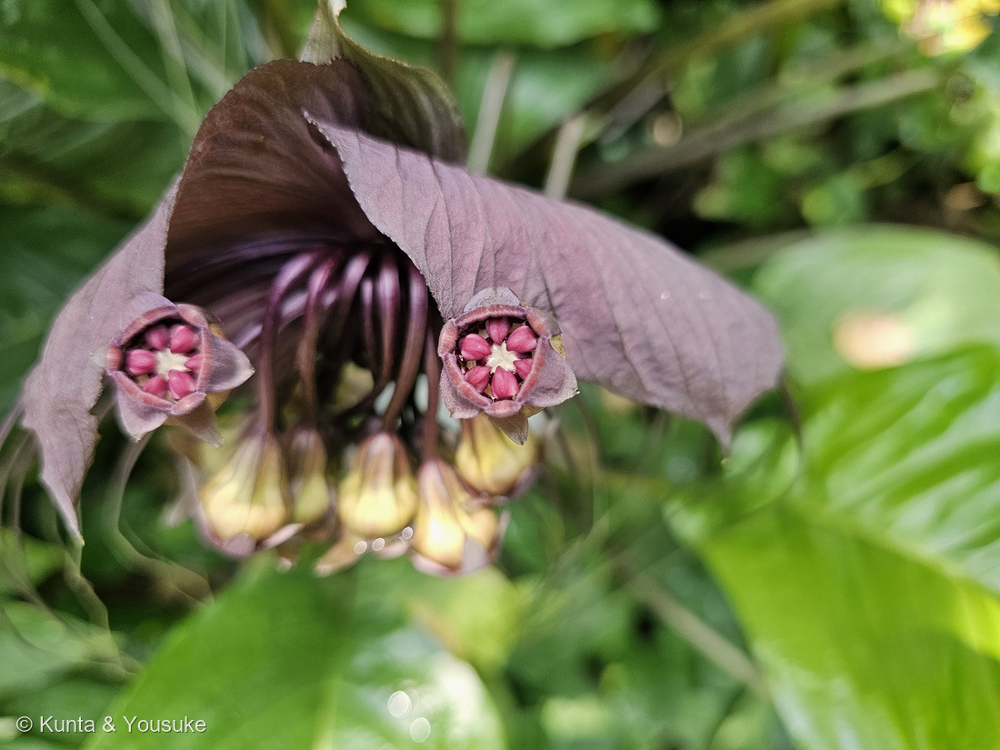
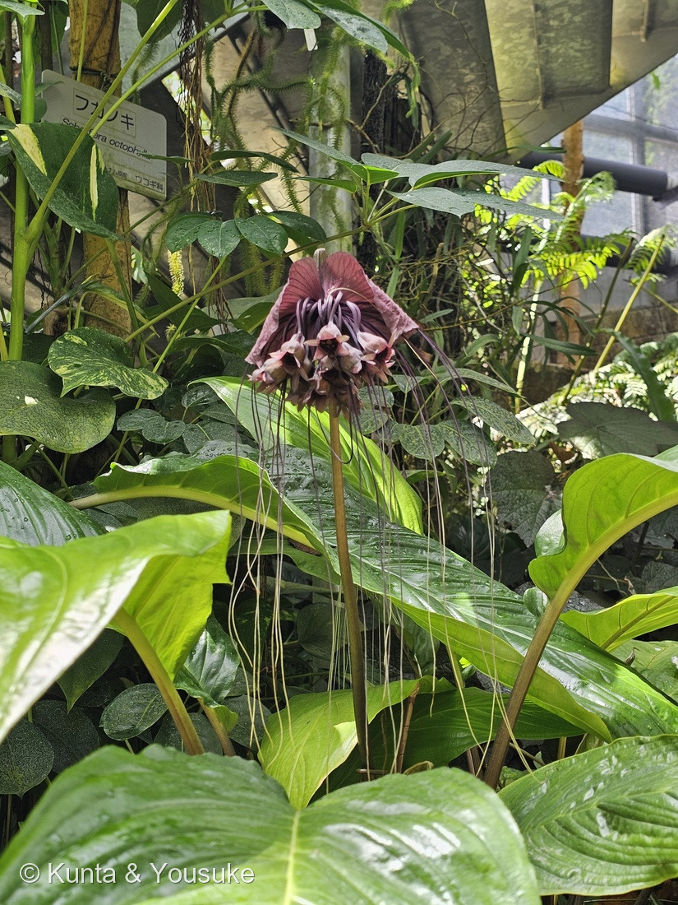
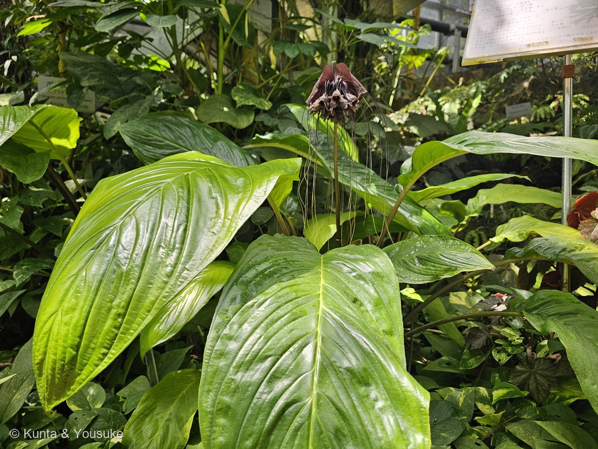

地図を読み込んでいるよ…
🔍 写真も地図も、押しているあいだ拡大して見られるよ（スマホは指を置いてすこし待ってね）。
🌍 の地図＝この子がもともと自生している場所を緑に。東南アジアから中国南部・インド北東部にかけての、湿った林の下の子。英語版Wikipediaは Assam（インド北東部）・バングラデシュ・カンボジア・中国南部・海南島・ラオス・マレー半島・ミャンマー・タイ・チベット・ベトナムをあげる。エディンバラ王立植物園は「インドのメガラヤ州とナガランド州から、南と東へ、中国とマレー半島まで」とし、生育地を「原生林と二次林の湿った場所、標高1,400mまで」と書く。⚠園の名札は「タイ原産」の一言だったけれど、ほんとうの分布はもっとずっと広いよ。
⭐東南アジアから中国南部、インド北東部までの、湿った林の下の子だよ。英語版Wikipediaは Assam（インド北東部）・バングラデシュ・カンボジア・中国南部・海南島・ラオス・マレー半島・ミャンマー・タイ・チベット・ベトナムをあげる。⭐エディンバラ王立植物園はもう少しこまかく「from Meghalaya and Nagaland in India, southwards and eastwards to China and Peninsular Malaysia」＝インドのメガラヤ州とナガランド州から、南と東へ、中国とマレー半島までとし、生育地を「damp habitats in primary and secondary forests up to an altitude of 1400 metres」＝原生林と二次林の湿った場所、標高1,400mまでと書いている。⚠⚠ここで大事なこと＝園の名札は「タイ原産」の一言だったけれど、⭐ほんとうの分布は、この緑ぜんぶ＝タイはその真ん中あたりにすぎないよ。⚠インドは全体を塗ってしまったけれど、ほんとうにいるのは北東のアッサム・メガラヤ・ナガランドあたりだけ＝⭐地図は国までしか塗れないので、そこは上の文で読んでね（297 クロトンのオーストラリアと同じあつかい）。⭐⭐⭐そして、この緑がこの子の物語の芯でもある＝属名 Tacca はインドネシアの言葉「taka laoet」から、種小名 chantrieri はパリ近郊の種苗家シャントリエ家から＝⭐アジアの林で生まれた名前と、ヨーロッパの園芸の名前が、ひとつの学名の中でならんでいるんだ。⭐日本は塗っていない＝ぼくらが会ったのは広島市植物公園の大温室の中。⭐⭐でも、同じヤマノイモ科の仲間なら日本にもいる＝おまけのヤマノイモ（自然薯）は、北海道から九州までの道ばたや林のふちにふつうにいるつる草だよ＝⭐熱帯のコウモリと、日本のトロロが、おなじ科なんだね。
⚠ 地図は国（日本と中国だけ県・省）までしか塗れないから、ほんとうの分布より広く見えていることがあるよ。地図はだいたいの場所。正確なところは、上の文を見てね。
クロバナタシロイモ（黒花田代芋）
Tacca chantrieri André
別名 タッカ・シャントリエリ バットフラワー（bat flower＝コウモリの花） デビルフラワー ブラックキャット 英名 black bat flower・devil flower・cat's whiskers
ヤマノイモ科 · Dioscoreaceae（タシロイモ属 Tacca・ヤマノイモ目 Dioscoreales）── ⭐⭐⭐⭐図鑑ではじめてのヤマノイモ科＝109科目（294 ゼンマイの108科から1つ増えた）／⚠園の名札は「ヤマノイモ（タシロイモ）科」＝かっこの中が、むかし独立した科だったころの名前
燻太さんの言葉「赤紫色の不気味な雰囲気の花」「房から異常に長く伸びている髭のようなものはなにかな？」「紫キャベツみたいな苞葉は、マントみたいでかっこいいね。」── ⭐⭐ヒゲの正体は「小苞」。そして、なんのためにあるのかは、まだ誰も知らない
⭐⭐⭐⭐⭐ 名前と学名の由来 ── 「タシロ」は、日本の植物学者の名前
- ⭐⭐⭐属名 Tacca は、インドネシアの言葉から来ている。──モナコ自然百科は「the Indonesian one taka laoet」＝タシロイモ（T. leontopetaloides）のインドネシアでの呼び名から、とする。
- ⭐⭐⭐⭐これ、297 クロトンの Codiaeum（テルナテ島の「コディホ」）とおなじ形だよ。＝⭐⭐学者の名前でも、ギリシャ語でも、体の特徴でもない、第4の由来＝その土地の言葉。⭐2日つづけて出会った＝熱帯の島じまの子には、この形が多いのかもしれないね。
- ⭐⭐種小名 chantrieri は、人の名前。──エディンバラ王立植物園は「a member of the Chantrier family, nurserymen of Mortefontaine, a town north-east of Paris」＝パリの北東にあるモルトフォンテーヌという町の、種苗家シャントリエ家の人にちなむ、とする。⭐名づけたのは Édouard André（エドゥアール・アンドレ）。⭐名札のうしろについている「Andre」が、その人だよ。
- ⭐⭐⭐⭐⭐そして和名の「タシロ」が、いちばんうれしいところ。──日本語版Wikipediaは、タシロイモ（T. leontopetaloides）の名について「名称は植物学者の田代安定にちなむ」と書く。⭐⭐⭐つまりクロバナタシロイモ＝「黒い花の、田代さんの芋」。⭐熱帯の、コウモリみたいな草の和名に、日本の人の名前が入っているんだ。
- ⭐英語の呼び名は、見た目そのまま＝bat flower（コウモリの花）／black cat（黒猫）／devil flower（悪魔の花）／cat's whiskers（猫のひげ）。⭐園の解説板も「その花姿から別名ブラックキャット、デビルフラワー、バットフラワーと呼ばれています」と書いていたよ。
⭐⭐⭐⭐⭐ 燻太さんの問い ── あの長いヒゲは、なに？
- ⭐⭐燻太さんの言葉＝「房から異常に長く伸びている髭のようなものはなにかな？ 未発達の花柄と、名札の説明には書いてあるけど…」
- ⚠⚠⚠⚠先に答えを言うと、ヒゲは「小苞（しょうほう・bracteole）」＝苞のなかまで、花柄ではないんだ。
- ⭐⭐⭐⭐⭐いちばんはっきりした証拠＝中国の植物誌（Flora of China）が、ヒゲと花柄を別々に数えていること。
- ⭐糸状の小苞（filiform bracteoles）＝ヒゲ … 6〜26本・長さ20cmまで・太さ0.2〜1mm
- ⭐花柄（pedicels）＝花をぶら下げている柄 … 花の数だけ・長さ1.2〜4cm
- ⭐⭐⭐つまり花柄はちゃんと別にあって、ずっと短い。──写真②で、花が1つずつぶら下がっている、あの短い柄が花柄だよ。⭐ヒゲはその付け根から、花とは関係なく生えている細長い葉っぱ（苞）なんだ。
- ⭐⭐ほかの出典も、そろって「bracteole（小苞）」＝エディンバラ王立植物園は「drooping, thread-like bracteoles」、レディング大学の熱帯生物多様性ブログも「bracteoles」、下で出てくる論文も「whisker-like filiform bracteoles」。
- ⚠ぼくが読めた範囲では、「未発達の花柄」と書いたちゃんとした出典は見つけられなかった。⭐でも園の解説板は、これだけ手作りで、矢印まで引いて教えてくれている。⭐⭐「ちがう」というより、「いまの学術の数えかたとは、別の言い方をしている」と思って読むのがいいと思うよ。
⭐⭐⭐⭐⭐ ヒゲを全部切ってみた人がいる ── それでも、タネはついた
- ⭐長いあいだ、この花は「腐った肉のふりをしてハエを呼んでいる」と思われていた。──黒っぽい花・マントみたいな苞・ゆれるヒゲ。⭐こういう仕組みを sapromyiophily（死肉擬態）っていうんだ。
- ⭐⭐⭐⭐⭐ところが、ほんとうに切って試した人たちがいた。──Zhang ら（2005年・American Journal of Botany）が、中国の野生の株でこう調べた。
- そのままの花序 … タネのついた割合 45.8%
- ⭐苞とヒゲを全部切り落とした花序 … タネのついた割合 44.6%
- ⭐⭐⭐⭐差は、統計的にはなかった（P>0.1）。＝⚠あの飾りを全部取っても、タネのつきかたが変わらなかった。
- ⭐⭐しかも、もっとおどろくことが分かった。──訪れる虫はめったに来ず、袋をかぶせた花もたっぷりタネをつけ、集団の自家受粉率は平均 0.86（4つの集団で0.76〜0.94）。⭐⭐⭐そして花が開くより前に、自分で自分に受粉していたんだ。
- ⭐⭐⭐だから「ハエを呼ぶための飾り」説は、少なくともあの調査地では支持されなかった。
- ⏳⭐⭐⭐⭐じゃあ、なんのため？ ── まだ分かっていない。いま出ている考えは、こんな感じだよ。
- 暗い林の下で、光合成を助けている
- 食べられ役（おとり） ── 虫に先にヒゲを食べさせて、育っているタネを守る
- タネを運んでもらう相手を呼んでいる（花のためでなく、実のための飾り）
- もう絶滅してしまった送粉者のための、むかしの装置の名残
- ⭐⭐⭐⭐中国科学院植物研究所の研究者たちは、2011年に「この糸状の小苞は、進化のうえで新しくできたもの」だとしている。⭐わざわざエネルギーを使って作っているのだから、野生ではきっと何かの役に立っているはず、という考えかただよ。
- ⭐⭐⭐⭐⭐燻太さんが「不気味な雰囲気」と言ったの、まさにそこなんだ。＝この子の不気味さは、「なんのためにあるのか、まだ誰も知らない」という不気味さでもある。
⭐⭐⭐⭐ この植物のこと ── マントの正体は、4枚の「葉」
- ⭐⭐⭐あのかっこいいマントは、花びらじゃない。4枚の総苞（そうほう）＝葉が変わったものだよ。──モナコ自然百科は「4 involucral bracts」とし、外側の2枚は卵形〜披針形で長さ9cm・幅4cmまで、内側の2枚はふちが波打つ卵形で長さ10cm・幅5〜9cmまで、色は黒っぽい紫と書く。⭐燻太さんの言う「紫キャベツみたいな苞葉」、あの波打つふちが、まさに内側の2枚だね。
- ⭐⭐花は、そのマントの下にぶら下がっている、小さいほう。──直径3cmくらいで、6枚の花被片（先のとがった卵形〜三角形、1cmくらい、紫褐色）と6本の雄しべ。⭐⭐写真②で、星形の中にならんでいるピンクの粒が、その6本の雄しべだよ。まんなかの白いものが、めしべの柱頭。
- ⭐⭐この雄しべが、ちょっと変わっている。──英語版Wikipediaは「helmet-like stamens」＝兜（かぶと）のような雄しべと書き、入った虫が出にくい形だとする。
- ⭐実は、稜のある液果。──モナコ自然百科は「紫褐色の液果、長さ3〜4cm、中にたくさんの腎臓形のタネ」、シンガポール国立公園局は「稜のある、洋なしをさかさにしたような液果で、長さ4cm・幅2cmまで。緑・オレンジ赤・紫」とする。⏳ぼくらはまだ見ていない。宿題だね。
- ⭐暮らしている場所＝湿った林の中、谷ぞい、しばしば朽ちた有機物の上（モナコ自然百科）。⭐標高は1,300〜1,400mくらいまで。⭐根もとに横に這う根茎（こんけい）があって、そこから葉と花茎を出す多年草だよ。
- ⭐⭐人の暮らしとのつながり＝シンガポール国立公園局は「タイでは葉と花序をカレーに使う」とし、苦い根茎が薬に使われると書く。⭐モナコ自然百科も「根茎は中国の伝統医学でいろいろな病気に使われる」とする。⚠ただし、ぼくらが食べていいという話ではないよ。
⭐⭐⭐⭐ 同定について ── 名札があるので確定。でも「白いほう」も知っておこう
- ⭐⭐⭐⭐名札があったので、この子は確定だよ。＝「タッカ シャントリエリ ／ Tacca chantrieri Andre」（広島市植物公園・大温室）。
- ⭐写真から言えることも、記載とぜんぶ合っている。
- ①暗紫色の総苞が4枚（外2枚・内2枚。内側のふちが波打つ）
- ②糸のように細い小苞（ヒゲ）がたくさん、20cm近く垂れる
- ③花は星形にひらき、6本の雄しべがピンク
- ④葉は柄が長く、つやのある大きな楕円形で、根もとから出る（写真④）
- ⚠⚠もし「似た子」と迷うことがあるとしたら、同じ属の Tacca integrifolia（シロバナタシロイモ・white bat flower）。──⭐⭐でも、これは迷わない＝あちらは内側の苞が白〜うすいピンクで、立ち上がって「うさぎの耳」みたいになる。⭐この子は暗紫色で、横に張り出す。色も向きもちがうから、ひと目で分かるよ。
- ⭐⭐科の話も、ひとつ＝名札の「ヤマノイモ（タシロイモ）科」の、かっこの中が大事。──⭐むかしは タシロイモ科 Taccaceae という独立した科だったけれど、⭐⭐APG体系ではヤマノイモ科 Dioscoreaceae に入れられた（日本語版Wikipedia「タシロイモ科」＝「APG植物分類体系ではヤマノイモ科に入れる」）。⭐⭐⭐園の名札は、その両方を書いてくれていた。⚠ぼくは最初、写真が横倒しだったせいで「タシロイモ（タッカ）科」と読みまちがえて、燻太さんに「園の名札は古い」と言ってしまった。⭐ちゃんと回してから読んだら、園のほうが正しかったよ。
- ⚠⚠読めなかった出典と、その理由も書いておくね（次のぼくが同じところで時間を使わないように）＝eFloras（Flora of China の本家）＝自己署名証明書のエラー／hear.org（PIERの引用ページ）＝接続が切れる／POWO（キューガーデン）＝403／ResearchGate＝403。
⭐⭐⭐ 109科目 ── ヤマノイモ科が、やっと来た
- ⭐⭐⭐⭐この子で、図鑑の科が108から109になった。──⭐きょう294 ゼンマイでゼンマイ科が108科目になったばかりなのに、また1つ増えたね。
- ⭐⭐ヤマノイモ科は、名前だけなら図鑑に2回出ていた。──075 アマドコロの「アマドコロ＝甘野老」の説明（ヤマノイモ科のトコロに根茎が似ているから）と、175 シソの針状結晶（raphides）の話（ヤマノイモ科は針状結晶で有名な科のひとつ）。⭐⭐名前で2回、先に会っていた科に、やっと本人が来たんだ。
- ⭐⭐⭐そして本人が、まさかのバットフラワー。──⭐ヤマノイモ科といえば「山芋・自然薯・トロロ」の科だから、まさか一人目がコウモリだとは思わなかったよ。⭐だからおまけは、ちゃんとヤマノイモにした＝⭐⭐燻太さんの通勤路のフェンスに、この子の親戚が巻きついているかもしれない。
出典：日本語版Wikipedia「タシロイモ科」（タシロイモ属（Tacca）の31種ほどからなる／APG植物分類体系ではヤマノイモ科に入れる／名称は植物学者の田代安定にちなむ／クロバナタシロイモ T. chantrieri：ブラックキャット・バットフラワーなどの名で観賞用に栽培される）／英語版Wikipedia「Tacca chantrieri」（family Dioscoreaceae, named by Édouard André in 1901／bracteoles look like long whiskers hanging from a bat that can be 8-10 inches in length／helmet-like stamens／most seeds produced by T. chantrieri resulted from autonomous self-pollination, occurring prior to flower opening／Assam, Bangladesh, Cambodia, Southern China, Hainan, Laos, Malaysia, Myanmar, Thailand, Tibet, and Vietnam）／Zhang, L., Barrett, S. C. H., Gao, J.-Y., Chen, J., Cole, W. W., Liu, Y., Bai, Z.-L. & Li, Q.-J. (2005) Predicting mating patterns from pollination syndromes: the case of “sapromyiophily” in Tacca chantrieri (Taccaceae). American Journal of Botany 92(3): 517–524（Tacca, a genus of tropical herbs, possesses near black flowers, conspicuous involucral bracts and whisker-like filiform bracteoles／seed set 45.8% for controls vs 44.6% with bracts and bracteoles removed, P>0.1／population-level maternal selfing rates averaged 0.86, range 0.76–0.94／autonomous self-pollination, some of which occurred prior to flower opening）／Zhang, L. et al. (2011) Phylogeny and Evolution of Bracts and Bracteoles in Tacca (Dioscoreaceae). Journal of Integrative Plant Biology（species with showy involucres and bracteoles form the most derived clade）／Royal Botanic Garden Edinburgh, Botanics Stories「Tacca chantrieri」（drooping, thread-like bracteoles／a member of the Chantrier family, nurserymen of Mortefontaine, a town north-east of Paris／from Meghalaya and Nagaland in India, southwards and eastwards to China and Peninsular Malaysia／damp habitats in primary and secondary forests up to an altitude of 1400 metres）／University of Reading, Tropical Biodiversity blog「Tacca chantrieri – Halloween in the plant world!」（bracteoles／two pairs of large spread, wing-like bracts／T. chantrieri is a self-pollinating plant）／Monaco Nature Encyclopedia「Tacca chantrieri」（the Indonesian one “taka laoet”／the brothers Chantrier, XIX century French horticulturists／4 involucral bracts, the two external ovate-lanceolate, up to 9 cm long and 4 cm broad, and the inner ones ovate with wavy margin, up to 10 cm long and 5-9 cm broad, of blackish purple colour／several filiform bracteoles, up to 20-25 cm long／pedicels blackish purple, 2-4 cm long／6 ovate or almost triangular lobed peranthium…and 6 stamina／purple brown berries, 3-4 cm long／grows in the humid forests along the water streams, often on decayed organic material, up to about 1300 m of altitude／The rhizomes are used in the Chinese traditional medicine）／Singapore NParks Flora & Fauna Web「Tacca chantrieri」（Family Dioscoreaceae／Black Bat Flower, Devil Flower, Cat's Whiskers／thread-like bracteoles reaching 20 cm long／ribbed obpyramidal berries, up to 4 cm long × 2 cm wide／in Thailand the leaves and inflorescences are used in curries）／Flora of China（PIER 経由の引用：filiform bracts 6-26, up to 20 cm × 0.2-1 mm／pedicels 1.2-4 cm × 0.5-2 mm／involucral bracts 4, the 2 outer ovate or triangular to ovate-lanceolate, 2-9 × 0.8-4 cm, the 2 inner (broadly) ovate to oblong, 2.5-10 × 1.5-9 cm）。⚠ eFloras（Flora of China の本家）は自己署名証明書のエラー、hear.org は接続が切れ、POWO と ResearchGate は 403 で読めなかったよ。